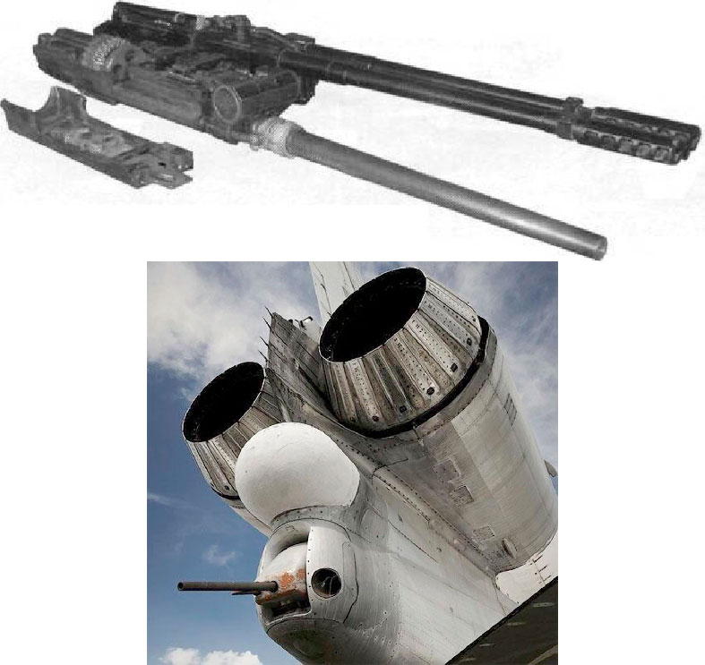

Авиационная пушка Р-23
Нажми ссылку на видео https://goo.su/aTyy
К началу 1960-х гг. при имевшемся уровне технологии пушками АМ-23 или НР-30, в основном, были исчерпаны возможности классической схемы автоматического оружия. Сам А.Э. Нудельман однозначно высказывался на этот счет, указывая на «достижение предельных характеристик в обычной схеме одноствольной автоматической пушки». Дальнейшее повышение плотности огня путем увеличения скорострельности требовало применения новых конструктивных схем.
Барабанная (или револьверная) схема отличается от обычной тем, что в ней на один ствол приходится несколько патронников. Наличие вращающегося блока патронников позволяет совместить по времени несколько операций цикла автоматики: отпирание канала, экстракция стреляной гильзы, досылание и запирание патрона происходят параллельно, и каждый патронник за поворот барабана обеспечивает изготовку к производству выстрела. Применение такой схемы ведет к увеличению темпа стрельбы по сравнению с пушками классической схемы более чем в 2 раза.
Возможны две конструктивные разновидности барабанной схемы - в зависимости от направления досылания патрона в патронник. В первой из них патрон досылается сзади, как в обычных пушках. Такая схема является классической и применена на очень многих системах второй половины 20-го века, начиная с немецкой МК-213 еще военного времени, а позднее, в пушках «Аден», DEFA 552. Она не накладывает никаких ограничений на форму гильзы, т.е. могут использоваться стандартные патроны. Во второй схеме, предложенной и впервые осуществленной в ОКБ-16 A.A. Рихтером в пушке Р-23 (индекс ГРАУ 9-А-478, заводское обозначение 261П), патрон досылался спереди назад, и длина артиллерийской системы могла быть уменьшена, по меньшей мере, на длину патрона. Поводом к созданию оригинальной конструкции стали новые требования: предполагалась ее установка в качестве оборонительного вооружения новых сверхзвуковых бомбардировщиков (для истребителей считалось достаточным исключительно ракетное вооружение), а сверхзвуковые скорости вынуждали использовать предельно короткоствольные орудия. Для оружия такой схемы с передней подачей патрона потребовался соответствующий патрон с полностью цилиндрической гильзой без выступающего ранта, в которой целиком утапливался снаряд. С целью обеспечения требуемой начальной скорости 850 м/с при ограниченной длине ствола патрон снаряжался вдвое большим количеством пороха, необходимым и для действия автоматики.
Другой особенностью Р-23 стала автоматика, полностью основанная на газоотводе - три независимых газопороховых двигателя (принципиально подобных газовому поршню затвора того же автомата), выполняющих экстракцию и отражение гильзы вперед, досылание патрона, поворот барабана. Досылание осуществлялось поршнем-досылателем, приводимым в движение пороховыми газами. Он принудительно разгонял патрон на пути 15 мм, а затем тот влетал в патронник по инерции (из-за чего такое досылание получило наименование ударного или броскового). Часть пороховых газов отводилась через канал в оси барабана в патронник, где находилась гильза. Действуя на дно гильзы, после выстрела и поворота барабана, газы «выстреливали» ее из бокового патронника вперед, и в освободившееся гнездо досылался новый патрон. Скорость досылаемых патронов достигала 25 м/с, а стреляные гильзы вылетали со скоростью 40 м/с. Ударное досылание потребовало более прочной стальной гильзы (ее масса, вдвое большая, чем у обычной, достигала половины массы всего патрона), передняя часть которой, примыкая к каналу ствола, служила его «началом» и обеспечивала при выстреле направление в него снаряда. Совмещение патронника со стволом обеспечивала скользящая втулка-обтюратор, прижимаемая спереди тем же давлением пороховых газов.
Необходимые баллистические данные при укороченном стволе обеспечивались усиленным зарядом пороха, увеличенным по сравнению с патроном НР-23 вдвое; его воспламенение осуществлялось электрокапсюлем с дублирующим запалом на случай отказа в электрозапальной цепи. Использование электрозапала, заменившего механический ударник, также способствовало компактности конструкции. В отличие от прочих систем, пушка Р-23 получила прогрессивную нарезку канала ствола. 12 правосторонних нарезов глубиной 0.35 мм и шириной 4 мм начинались с очень малым углом, который возрастал по мере разгона снаряда до длины хода 27 калибров.
Причиной для такого решения (достаточно трудоемкого в производстве и не самого технологичного) стал тот же специальный патрон, в котором снаряд находился утопленным в глубине гильзы. Обычным образом при досылании патрона снаряд вводился в начало канала ствола, «щеками» соприкасаясь с его нарезами, и при выстреле начинал движение с места, плавно проходя по ним своим ведущим пояском. В пушке Р-23 снаряд успевал разогнаться в гильзе до ощутимой скорости и попадал в ствол с ударом о выступы нарезов, грозя быстрым износом ствола. Для ослабления динамического ударного воздействия пришлось организовать в начале ствола нарезы с очень малыми углами наклона, крутизна которых плавно увеличивалась по его длине до нормального шага, а сам канал - выполнить в виде вставляемого внутрь лейнера, заменяемого по износу, подобно «перестволиванию» крупнокалиберной корабельной артиллерии (там оно обусловлено как колоссальными нагрузками на ствол, приводящими к скорому износу, так и высокой стоимостью тяжелых артсистем, требующей экономить и заменять, по возможности, не весь агрегат, а только отдельные его части). Зная о таких слабых местах своего орудия, живучесть ствола была определена в 3000 выстрелов, его изготовители в комплекте принадлежностей к пушке сразу прилагали сменный ствол.
Наличие одного ствола, нагруженного несколькими патронниками, ограничивает темп стрельбы барабанной пушки по условию его живучести (напряженный температурный режим, интенсивное истирание поверхности ствола, химическое и эрозионное воздействие пороховых газов приводят к быстрому «расстрелу» ствола - его износу и выгоранию). А это значение темпа стрельбы таково, что оно может быть получено уже при четырех патронниках в барабане. По этим причинам число патронников в одноствольных барабанных пушках не превышает 4-5, а величина предельного темпа стрельбы (по условию допустимой скорости соударения деталей при останове барабана) для калибра 23 мм составляет 2500-2800 выстр./мин и для калибра 30 мм - 1800-2500 выстр./мин. В этой связи любопытно вспомнить о предвоенных попытках создания скорострельных систем - УльтраШКАС, пулемет Юрченко, пулемет Савина-Норова СН, СИБЕМАС конструкции ЦКБ-14 и других, способных теоретически развивать темп стрельбы до 3000 и более выстр./мин. Эти изделия были работоспособны, однако живучесть единственного ствола при таких нагрузках была крайне низкой.
Показательный эксперимент провели в 1970-е гг. в тульском КБП, отыскав на складе лежавший с довоенных времен пулемет и попытавшись оснастить его стволом из новейшей конструкционной стали. Пулемет выдал неслыханный темп в 5000 выстр./мин, но сгоревший ствол после единственной очереди можно было только выбросить. К слову, A.A. Рихтером была выполнена проработка крупнокалиберного пулемета по схеме Р-23, обеспечивавшая практическую скорострельность порядка 5000 выстр./мин., но об этом чуть дальше.
Применение в пушке Р-23 барабана с четырьмя патронниками (принятого по числу основных операций автоматики) позволило получить хорошо сбалансированную артиллерийскую систему с высокими тактико-техническими характеристиками (темп - 2500выстр./мин при весе 58 кг). Однако наряду с массой положительных качеств (высокая скорострельность, большая начальная скорость снаряда, хорошие весовые характеристики) пушка имела существенный недостаток - применение специального патрона с более массивной и длинной стальной гильзой привело к увеличению массы боекомплекта, сам патрон был крайне дорог и сложен в производстве, не говоря уже о нарушении унификации системы боеприпасов (заметим, что обычный снаряд калибра 23 мм в те времена стоил около рубля).
Идея комплексного создания патрона и пушки в Р-23 стала примером доведения ее до крайности: по сравнению со штатным патроном калибра 23 мм, весившим 320 г и имевшим размер 200 мм, боеприпас к Р-23 весил 513 г и имел длину 260 мм; толстостенная прочная стальная гильза весила 255 г против 114 г у обычной. В силу больших инерционных нагрузок, свойственных бросковому досыланию, заделку снаряда в гильзе пришлось выполнить весьма основательной, с усилием его извлечения почти в 2 т (вдвое больше, чем нужно было в патроне АМ-23). Снаряд (также специальной конструкции) пришлось выполнить полегче, однако из общей массы патрона к Р-23 только треть приходилась на «полезную нагрузку» в виде самого снаряда (у обычного патрона типа АМ-23 двухсотграммовый снаряд составлял больше половины от массы боеприпаса). В итоге боекомплект стрелковой установки бомбардировщика в 500 патронов с пушкой Р-23 «тянул» на добрых 100 кг больше, чем аналогичный боеприпас к АМ-23.
На вооружение Р-23, правда, так и не была принята из-за то и дело возникавших рекламаций, включая и имевшие место разрывы орудия, но оставалась на снабжении ВВС согласно решению от 1963 г. (формулировка позволяла продолжать производство и эксплуатацию Р-23 даже при неполном соответствии требованиям заказчика). Создатели Р-23 удостоились Госпремии за 1967 г. Кое-кто в «оборонке», правда, оценивал изделие Рихтера иначе. Так, работавший тогда в НИИ-61 молодой и перспективный конструктор В. Грязев указывал на «безумную дороговизну и пушки, и ее патрона», отзываясь обо всей затее как о «технической и экономической ошибке».
Характерно, что американцы еще с 1951 года разрабатывали 30-мм авиапушку Т168 такой же схемы – тот же 4-каморный барабан с патронниками, такая же «бросковая» схема досылания патрона спереди и удаление гильзы вперед, такой же газовый принцип действия. Вот только конструкция патрона американской пушки несколько отличалась – у американцев патрон был более классической формы с алюминиевой гильзой. Требования были такими же, как и при создании Р-23: как можно более компактное, лёгкое и скорострельное оружие, минимально выступающее за пределы установки и имеющее минимальную длину при заданной длине ствола. Только американцы разочаровались в схеме значительно раньше нас - работа над проектом Т168 была остановлена в 1957 году, когда первые образцы Р-23 только появились.
В 1959 г. под пушку Р-23 была разработана кормовая установка ДК-20 для бомбардировщика Ту-22. Первоначально планировалось оснастить самолет отработанными пушками АМ-23 (в варианте ТКБ-494). Однако Нудельман с Рихтером на правах давних партнеров предприняли визит к Туполеву, предложив ему свой очень-таки выгодный вариант с установкой на сверхзвуковом самолете соответствующей современной Р-23. Руководители ОКБ-16, по всей видимости, обладали даром убеждения: когда их коллеги из НИИ-61 - создатели пушки АО-7 (ТКБ-513) - попытались наведаться в туполевское ОКБ-156 со своей разработкой, посмев нелестно оценить Р-23, из главка им пригрозили увольнением за «подрыв авторитета заслуженных людей страны и неуместные предложения».
В отличие от предыдущих систем, где пушечным огнем управлял стрелок, на Ту-22 установка имела электрогидравлический следящий привод с дистанционной системой управления, наводимой с помощью радиолокационного и телевизионного прицелов. Эта схема оборонительного вооружения получила в дальнейшем развитие на дальних бомбардировщиках. Однако использование Р-23 ограничилось единственным типом самолета: отчасти по причине необходимости специальных патронов при все более насущных требованиях к унификации, а также из-за вытеснения огневых установок более современными средствами обороны (РЭБ). Соответственно, и на снабжении приходилось держать боеприпасы, применявшиеся только на одном самолете, что стало, пожалуй, исключительным в своем роде. Вместе с тем несовершенство первых отечественных помеховых станций, по эффективности не обеспечивавших превосходство над пушечным оборонительным вооружением, позволило последним остаться в строю.
В 70-х годах пушка Рихтера неожиданно получила продолжение в виде уникальной в своем роде «космической артиллерии» Р-23М «Картечь».
В 1967 году СССР, США и Великобритания подписали один из ключевых международных законов освоения космоса - «Договор о принципах деятельности государств по исследованию и использованию космического пространства». В нем много чего интересного, но главное - участники договора обязались не использовать космос как площадку для испытаний, размещения и использования оружия массового поражения.
При этом указанный договор совсем не запрещал вывод в космос обычного оружия, так что космические державы потихоньку разрабатывали и испытывали те виды оружия, которые считали перспективными для локальных космических боев.
Министерство обороны СССР делало ставку на группировку космических станций серии «Алмаз», коих было выведено на орбиту пять штук: «Салют-2», «Салют-3», «Салют-5», «Космос-1870», «Алмаз-1».
В обстановке жесточайшей секретности специально для них в начале семидесятых была сконструирована орбитальная пушка Р-23М «Картечь» на базе серийной 23-мм авиапушки системы А.А. Рихтера. Основной задачей оружия считалось прикрывать советские секретные спутники от похищения вражескими астронавтами.
Разработка орбитальной артиллерии велась в КБ Александра Нудельмана. И, судя по всему, с задачей конструкторы справились - получили пушку, способную работать в условиях невесомости в безвоздушном пространстве. Правда, до сих пор эта разработка в немалой степени покрыта завесой тайны и домыслов.
Доступной официальной информации по системе очень мало и многое было неизвестно до сюжета телепрограммы «Военная приёмка» «Пуля - не дура. Или шесть рекордов русских оружейников». В довольно серьёзных книгах рисовали модели чего-то с длинным и тонким стволом, что отличалось от базовой модели. По сети гуляли мутные фотографии из запасников Точмаша, по которым умельцы сделали довольно известные 3D-модели, но были и сомневающиеся, что изделие является именно космической пушкой и доверяли книжным рисункам.
Обратимся к физике - при огромной скорострельности Р-23 ствол должен либо иметь феноменальное охлаждение, либо быть весьма массивным, что и выбрал Рихтер. На орбите же проблемы с длинным и тонким стволом увеличатся - это и размещение в ограниченном объеме и охлаждение, с которым в космосе очень большие проблемы - передача тепла может производиться фактически только за счёт излучения, тогда как на Земле львиная доля приходится на взаимодействие частиц. Это же ограничивает применение энергетического оружия - мало того, что надо найти источник энергии, так избыточное тепло надо куда-то деть.
Из самого интересного, что узнали из «Военной приёмки» - это то, что пушка вовсе не пушка, а крупнокалиберный пулемёт калибра 14,5 мм. Оно и понятно - на станции важен каждый грамм, а таскать хотя бы 300 снарядов массой по полкилограмма - и из разведывательной станции получится жирный истребитель спутников. В видео замтехдиректора Точмаша Валерий Макеев указал массу пулемёта (будем уж точны и назовём вещи своими именами) в 17 кг, что гораздо легче 58 кг Р-23. Зато выросла скорострельность - аж 5000 в/мин (ранее указывалось 800-950 в/мин)! Для одноствольной системы это просто фантастическая цифра. Её достигали ещё при разработке Р-23, но, опять же, сделав на базе пушки пулемёт. Правда, тогда после первой же очереди ствол сгорел. Вполне возможно, это была не отдельная разработка, а как раз первые образцы Р-23М. Получившийся новый патрон достаточно небольшой и, судя по всему, обладает латунной, а не стальной, как у 23х260, гильзой, что также снижает массу. Пули, небольшие, тупоносые. Из-за особенностей заряжания, как и у предка, донце находится на сужающемся конце гильзы. Какой боекомплект был - неизвестно, но судя по патронному коробу явно невелик.
Пулемёт, в составе установки Щит-1, неподвижно монтировался в корпусе станции. Для наведения надо было ворочать всю станцию целиком. Сделано это для одного - компенсировать отдачу работой 2 ЖРД коррекции по 400 кгс тяги и 16 ЖРД жёсткой ориентации по 20 кгс. ОПС Алмаз должен был иметь массу 17,8 т (для сравнения, транспортный корабль снабжения ТКС имел стартовую массу 21 т) и стрельба из крупнокалиберного пулемёта с дикой скорострельностью вполне могла увести с целевой орбиты. То есть, возможность стрельбы ограничивалась не только боекомплектом, но и запасом топлива. В конце жизненного цикла станции, после многочисленных корректировок орбиты, вполне могло статься, что станция будет беззащитной. Стрельбу можно было вести как в ручном режиме с центра контроля полёта и управления станцией, так и дистанционном, с Земли. Из-за характерной конструкции панорамного-обзорного устройства и перископа кругового обзора Сокол обстановка напоминала место наводчика танка.
В свой полёт с первой и последней стрельбой Р-23М отправилась в составе Алмаз-2 (он же Салют-3) 26 июня 1974 года. К ней были отправлены две экспедиции на кораблях Союз-14 (с 3 по 19 июля 74-го, экипаж - Павел Попович и Юрий Артюхин) и Союз-15 (с 26 по 28 августа, экипаж - Геннадий Сарафанов, Лев Дёмин, из-за поломки системы стыковки Игла пришлось возвращаться ни с чем). Срок жизни станции подошёл к концу в 75-ом. 24 января 1975 года её вывели на орбиту захоронения. Тогда и была дана тестовая очередь из 20 выстрелов. Больше оружия на станции не ставили - американцы так и не создали орбитальных истребителей, а пулемёт всё-таки был слабой защитой, если перехватчики всё-таки создали бы - развитие авиационных ракет сделало стрелковое оружие вторичным.
| Модификация | Р-23 |
| Калибр, мм | 23 |
| Тип автоматики | газоотвод, револьверная подача |
| Масса тела орудия, кг | 58.5 |
| Длина, мм | 1468 |
| Длина ствола, мм | 1140 |
| Темп стрельбы, выстр/мин | 2500 |
| Начальная скорость пули, м/с | 850 |
| Емкость магазина | лента |
| Масса снаряда, г. | 175 (осколочно-фугасный) |
| Тип боеприпаса | 23х260 |